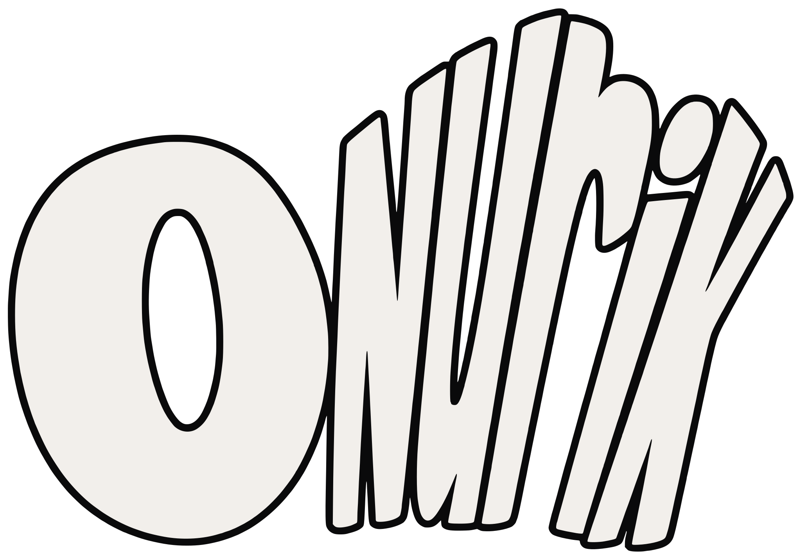

Onurik designs brand identities, websites and digital products — built to work as one system, for businesses across East Africa.
Now taking new projects ✦ Nairobi, Kenya
STEP 04
STEP 02
WHAT WE DO
From the first sketch of your identity to the stack underneath it.
Tell us what you’re building — we’ll make it impossible to miss.